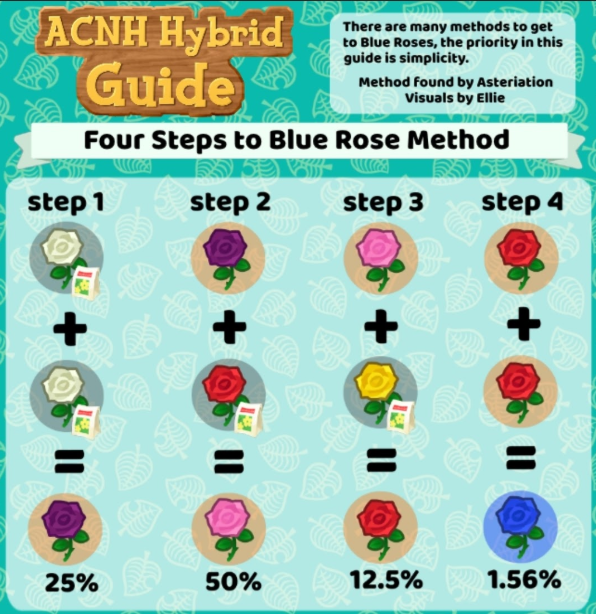

Blue Rose Methods
Blue roses are the most difficult flowers to obtain in the game. Hopefully one of these methods help
you!
×

Which path is right for me?
- "I'm a beginner, I want something easy and straight-foward!": Asteriation's 4-step method.
- "I know what I'm doing, I want the absolute fastest method!": Asteriation's Genepool method.
- "I'm a combination of both!": See chart below!

How fast is each path?
Metric: days to 1 blue rose from planting seeds.
Pairs means the maximum cap of pairs at each intermediary breeding step.
Visitors mean the number of visitors that help water your garden per day.
95 percentile

median

Folklore Method

| Introduction: | Standard original method. Average in every way possible. (originates from New Leaf!) |
|---|---|
| Strengths: | Methodical, each step is organized and has calculated % rates. |
| Weaknesses: | Not color-safe. You must learn how to avoid clones, and you must use clone-resistant
layouts. You must also need to do purple rose x testing. |
| Other pictures: | Genetics version: |
|
|
| Credits: | Method: originates from ACNL guide. Flowchart: @co32h. |
Asteriation's 4 Step Method

| Introduction: | Simple, easy, and straightforward method for beginners. |
|---|---|
| Strengths: | Color-safe, you don't have to worry about clones (although clone-resistant layouts are
always recommended). Also methodical, each step is organized and has calculated %
rates. |
| Weaknesses: | Slowest method, but not bad if you have visitors watering. However, difference is very significant if you do not have Nintendo Switch Online or otherwise cannot get visitors to help water your flowers. We strongly advise using another method if you are in this situation. |
| Credits: | Method: asteriation#6884. |
| Other pictures: | Visual version: (by Ellie33#5074). |
|  |
Asteriation's Genepool Method
| Introduction: | The fastest method! Involves a genepool and knowledge of cloning though. |
|---|---|
| Strengths: | gotta go fast. |
| Weaknesses: | Slowest method, but not bad if you have visitors watering. However, difference is very significant if you do not have Nintendo Switch Online or otherwise cannot get visitors to help water your flowers. We strongly advise using another method if you are in this situation. |
| Credits: | Method: asteriation#6884. |
| Other pictures: | Visual version: (by Ellie33#5074). |